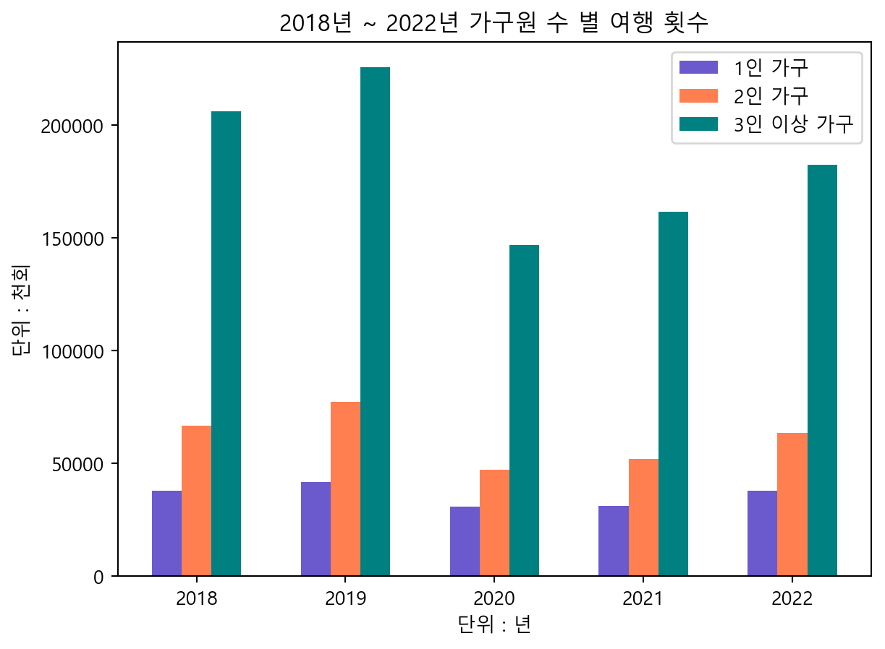

import pandas as pd
import numpy as np
# header를 두번째 행으로 고정, 첫번째 행에는 불필요한 정보가 들어있기 때문
num_trip = pd.read_excel('C:/Users/USER/Documents/LS빅데이터스쿨/PORTFOLIO/data/R_월별_국내여행_횟수_20240714204514.xlsx', header=1)Project1-3. 국내 여행 횟수
데이터 전처리
데이터 불러오기
rename()을 사용하여 열(columns)의 변수명 변경
# 시점
num_trip = num_trip.rename(columns = { '시점' : 'year', '항목' : 'month'})
# 전체
num_trip = num_trip.rename(columns = { '소계' : 'total'})
# 성별
num_trip = num_trip.rename(columns = { '남자' : 'male', '여자' :'female'})
# 학력
num_trip = num_trip.rename(columns = { '초졸 이하' : 'elmt', '중학교' : 'mid',
'고등학교' : 'high', '대학교이상' : 'univ+'})
# 가구원수
num_trip = num_trip.rename(columns = { '1인' : 'per1',
'2인' : 'per2',
'3인이상' : 'per3+'})연령대의 파생변수 생성
# 연령 - 15\~19세, 20대, 30대, 40대, 50대, 60대, 70세 이상을 청소년, 청년, 중년, 노년 층으로 구분
num_trip["teens"] = num_trip["15~19세"]
num_trip["young_adults"] = num_trip["20대"] + num_trip["30대"]
num_trip["middle_adults"] = num_trip["40대"] + num_trip["50대"]
num_trip["seniors"] = num_trip["60대"] + num_trip["70세 이상"]drop()을 사용하여 기존의 연령 열 삭제
# 15~19세, 20대, 30대, 40대, 50대, 60대, 70세 이상 열 7개 삭제
num_trip = num_trip.drop(num_trip.columns[np.arange(5,12,1)], axis=1)가구 소득의 파생변수 생성
# 저소득 \~ 200 만원 / 중위소득 200\~500 만원 / 고소득 500\~600이상 / 무응답
num_trip["l_sal"] = num_trip["100만원 미만"] + num_trip["100~200만원 미만"]
num_trip["m_sal"] = num_trip["200~300만원 미만"] + num_trip["300~400만원 미만"] + num_trip["400~500만원 미만"]
num_trip["h_sal"] = num_trip["500~600만원 미만"] + num_trip["600만원 이상"]
num_trip["nr"] = num_trip["무응답"]drop()을 사용하여 기존의 가구 소득 열 삭제
# np.arrange를 사용하여 columns의 index 지정(24,32,1) 총 100만원 미만, 100\~200만원 미만, 200\~300만원 미만, 300\~400만원 미만, 400\~500만원 미만, 500\~600만원 미만, 600만원 이상, 무응답 총 8열 삭제
num_trip = num_trip.drop(num_trip.columns[np.arange(24,32,1)], axis=1)직업 열(columns) 삭제
# 임금봉급근로자, 고용원있는사업주, 고용원없는자영업자, 무급가족 종사자, 사무전문, 기술생산노무, 판매서비스, 자영업, 학생, 전업주부, 무직은퇴, 기타 총 12개의 열 삭제
# drop()과 np.arrange를 사용하여 columns의 index 지정(5,17,1)
num_trip = num_trip.drop(num_trip.columns[np.arange(5,17,1)], axis=1)연도 결측치 처리
# year의 null값 index 범위를 지정하고 2018, 2019, 2020, 2021, 2022 값 할당
num_trip['year'][1 :12] = 2018
num_trip['year'][13:24] = 2019
num_trip['year'][25:36] = 2020
num_trip['year'][37:48] = 2021
num_trip['year'][49:60] = 2022
# month의 type을 object에서 int로 형 변환 필요
# str.replace()를 사용해서 맨 마지막 글자인 '월'을 ''로 변경
# astype('int')를 사용하여 int값으로 형 변환
num_trip['month'] = num_trip['month'].str.replace('월','')
num_trip['month'] = num_trip['month'].astype('int')C:\Users\USER\AppData\Local\Temp\ipykernel_2604\1564370647.py:2: FutureWarning:
ChainedAssignmentError: behaviour will change in pandas 3.0!
You are setting values through chained assignment. Currently this works in certain cases, but when using Copy-on-Write (which will become the default behaviour in pandas 3.0) this will never work to update the original DataFrame or Series, because the intermediate object on which we are setting values will behave as a copy.
A typical example is when you are setting values in a column of a DataFrame, like:
df["col"][row_indexer] = value
Use `df.loc[row_indexer, "col"] = values` instead, to perform the assignment in a single step and ensure this keeps updating the original `df`.
See the caveats in the documentation: https://pandas.pydata.org/pandas-docs/stable/user_guide/indexing.html#returning-a-view-versus-a-copy
C:\Users\USER\AppData\Local\Temp\ipykernel_2604\1564370647.py:2: SettingWithCopyWarning:
A value is trying to be set on a copy of a slice from a DataFrame
See the caveats in the documentation: https://pandas.pydata.org/pandas-docs/stable/user_guide/indexing.html#returning-a-view-versus-a-copy
C:\Users\USER\AppData\Local\Temp\ipykernel_2604\1564370647.py:3: SettingWithCopyWarning:
A value is trying to be set on a copy of a slice from a DataFrame
See the caveats in the documentation: https://pandas.pydata.org/pandas-docs/stable/user_guide/indexing.html#returning-a-view-versus-a-copy
C:\Users\USER\AppData\Local\Temp\ipykernel_2604\1564370647.py:4: SettingWithCopyWarning:
A value is trying to be set on a copy of a slice from a DataFrame
See the caveats in the documentation: https://pandas.pydata.org/pandas-docs/stable/user_guide/indexing.html#returning-a-view-versus-a-copy
C:\Users\USER\AppData\Local\Temp\ipykernel_2604\1564370647.py:5: SettingWithCopyWarning:
A value is trying to be set on a copy of a slice from a DataFrame
See the caveats in the documentation: https://pandas.pydata.org/pandas-docs/stable/user_guide/indexing.html#returning-a-view-versus-a-copy
C:\Users\USER\AppData\Local\Temp\ipykernel_2604\1564370647.py:6: SettingWithCopyWarning:
A value is trying to be set on a copy of a slice from a DataFrame
See the caveats in the documentation: https://pandas.pydata.org/pandas-docs/stable/user_guide/indexing.html#returning-a-view-versus-a-copy
미응답자 결측치 처리
# loc을 사용하여 nr 컬럼의 값이 "-"인 nr열의 값에 np.nan을 할당
num_trip.loc[num_trip["nr"] == "-", ["nr"]] = np.nan
# 데이터 전처리 결과 확인하기
num_trip.head(5)| year | month | total | male | female | elmt | mid | high | univ+ | per1 | per2 | per3+ | teens | young_adults | middle_adults | seniors | l_sal | m_sal | h_sal | nr | |
|---|---|---|---|---|---|---|---|---|---|---|---|---|---|---|---|---|---|---|---|---|
| 0 | 2018.0 | 1 | 24233 | 13019 | 11214 | 322 | 1326 | 8980 | 13604 | 2902 | 4946 | 16384 | 1267 | 8113 | 10362 | 4491 | 1925 | 12005 | 10148 | 156 |
| 1 | 2018.0 | 2 | 28263 | 14868 | 13396 | 567 | 1476 | 11288 | 14931 | 3286 | 6075 | 18902 | 1370 | 9087 | 12154 | 5651 | 1798 | 15334 | 10982 | 149 |
| 2 | 2018.0 | 3 | 24668 | 12768 | 11900 | 565 | 1806 | 8723 | 13575 | 3368 | 5504 | 15796 | 1110 | 8645 | 9875 | 5039 | 1912 | 13060 | 9545 | 149 |
| 3 | 2018.0 | 4 | 24242 | 12099 | 12143 | 482 | 1668 | 8810 | 13281 | 3058 | 5590 | 15594 | 1111 | 8607 | 9052 | 5473 | 2173 | 12848 | 9082 | 139 |
| 4 | 2018.0 | 5 | 24571 | 12607 | 11965 | 912 | 1596 | 9064 | 13000 | 3142 | 5096 | 16334 | 1232 | 7960 | 9774 | 5606 | 2086 | 12881 | 9348 | 255 |
전처리한 데이터 파일 추출
# to_excel()을 사용하여 DataFrame을 xlsx파일 형태로 저장
# index=False : Unnamed: 0 이라는 임의의 인덱스가 생성되는 것을 방지
num_trip.to_excel(excel_writer = 'C:/Users/USER/Documents/LS빅데이터스쿨/PORTFOLIO/pre_data/p_num_trip.xlsx', index=False)데이터 시각화
# 라이브러리 호출
import pandas as pd
import numpy as np
import matplotlib.pyplot as plt
# 전처리 된 데이터 불러오기
p_num_trip = pd.read_excel('C:/Users/USER/Documents/LS빅데이터스쿨/PORTFOLIO/pre_data/p_num_trip.xlsx')
# 분석을 용이하게 하기 위해 query()를 사용하여 각 년도별 행을 추출하여 DataFrame생성
y2018 = p_num_trip.query('year == 2018')
y2019 = p_num_trip.query('year == 2019')
y2020 = p_num_trip.query('year == 2020')
y2021 = p_num_trip.query('year == 2021')
y2022 = p_num_trip.query('year == 2022')
# 그래프에 한글 출력 가능하게 하기 위해 rcParams(runtimeconfiguration) 딕셔너리 설정
plt.rcParams['font.family'] ='Malgun Gothic'1. 2018년도 ~ 2022년도 5년간 연령별 여행 횟수 트랜드 구하기
# 그래프의 x축과 y축의 데이터 값 만들기
# for x in range 구문을 이용하여 다음과 같은 반복문을 실행, 년간 연령대 별 여행 횟수의 합을 구하는 것을 2018년부터 2022년까지 반복한다.
teens_total = [x['teens'].sum() for x in [y2018, y2019, y2020, y2021, y2022]]
young_adults_total = [x['young_adults'].sum() for x in [y2018, y2019, y2020, y2021, y2022]]
middle_adults_total = [x['middle_adults'].sum() for x in [y2018, y2019, y2020, y2021, y2022]]
seniors_adults_total = [x['seniors'].sum() for x in [y2018, y2019, y2020, y2021, y2022]]
years = [2018,2019,2020,2021,2022]
# title(), ylabel(), xlabel()을 사용하여 그래프의 제목과 x, y축 레이블 설정
plt.title("2018년 ~ 2022년 연령대 별 여행 횟수")
plt.ylabel("단위 : 천회")
plt.xlabel("단위 : 년")
# 그래프 그리기
# x_range : year의 길이 만큼 x축의 범위를 설정
# x_range + c : 그래프가 그려지는 위치값을 조절
# width : 그래프의 너비 설정
# label : 범례 표시
# color : 그래프의 색상 표시
x_range = np.arange(len(years))
plt.bar(x_range+0.0, teens_total, width=0.2, label='청소년(15~19세)', color = 'lawngreen')
plt.bar(x_range+0.2, young_adults_total, width=0.2, label='청년(2~30대)', color = 'blue')
plt.bar(x_range+0.4, middle_adults_total, width=0.2, label='중년(4~50대)', color = 'red')
plt.bar(x_range+0.6, seniors_adults_total, width=0.2, label='노년(6~70대 이상)', color = 'gray')
# x축 눈금 설정
# x_ticks()을 사용하여 x_range(0~0.6)의 중간(0.3)으로 눈금의 위치를 옮기고, 각 해당 위치에 해당하는 레이블을 years로 지정하여 년도가 함께 표시되도록 지정
plt.xticks(x_range+0.3, years)
# legend()를 사용하여 범례 추가
plt.legend()
# 그래프 보여주기
plt.show()
plt.clf()
<Figure size 672x480 with 0 Axes>2. 2018년도 ~ 2022년도 5년간 가구원 수 별 여행 횟수 트랜드 구하기
# 그래프의 x축과 y축의 데이터 값 만들기
# for x in range 구문을 이용하여 다음과 같은 반복문을 실행, 년간 가구원 수 별 여행 횟수의 합을 구하는 것을 2018년부터 2022년까지 반복한다.
per1_total = [x['per1'].sum() for x in [y2018, y2019, y2020, y2021, y2022]]
per2_total = [x['per2'].sum() for x in [y2018, y2019, y2020, y2021, y2022]]
per3_total = [x['per3+'].sum() for x in [y2018, y2019, y2020, y2021, y2022]]
years = [2018,2019,2020,2021,2022]
# title(), ylabel(), xlabel()을 사용하여 그래프의 제목과 x, y축 레이블 설정
plt.title("2018년 ~ 2022년 가구원 수 별 여행 횟수")
plt.ylabel("단위 : 천회")
plt.xlabel("단위 : 년")
# 그래프 그리기
# x_range : year의 길이 만큼 x축의 범위를 설정
# x_range + c : 그래프가 그려지는 위치값을 조절
# width : 그래프의 너비 설정
# label : 범례 표시
# color : 그래프의 색상 표시
x_range = np.arange(len(years))
plt.bar(x_range+0.0, per1_total, width=0.2, label='1인 가구', color = 'slateblue')
plt.bar(x_range+0.2, per2_total, width=0.2, label='2인 가구', color = 'coral')
plt.bar(x_range+0.4, per3_total, width=0.2, label='3인 이상 가구', color = 'teal')
# x축 눈금 설정
# x_ticks()을 사용하여 x_range(0~0.4)의 중간(0.2)으로 눈금의 위치를 옮기고, 각 해당 위치에 해당하는 레이블을 years로 지정하여 년도가 함께 표시되도록 지정
plt.xticks(x_range+0.2, years)
# 범례추가
plt.legend()
# 그래프 보여주기
plt.show()
plt.clf()
<Figure size 672x480 with 0 Axes>결론
- 2020년 모든 연령대 및 가구원에서 여행 횟수가 감소했음, 이는 코로나의 영향으로 보임. 2021년과 2022년에는 여행 횟수가 증가하는 경향을 보였으나 여전히 2019년 수준에 미치지 못함
- 2018 ~ 2022 총 5년간 중년(4-50)대의 여행 횟수가 가장 많고, 청년(2-30대)과 노년(6-70)대가 그 뒤를 따르며 청소년이 가장 낮은 여행 횟수를 가짐.
- 2018 ~ 2022 총 5년간 모든 년도에서 3인이상 가구 유형의 여행 횟수가 가장 많으며, 2인 가구와 1인가구가 그 뒤를 따름